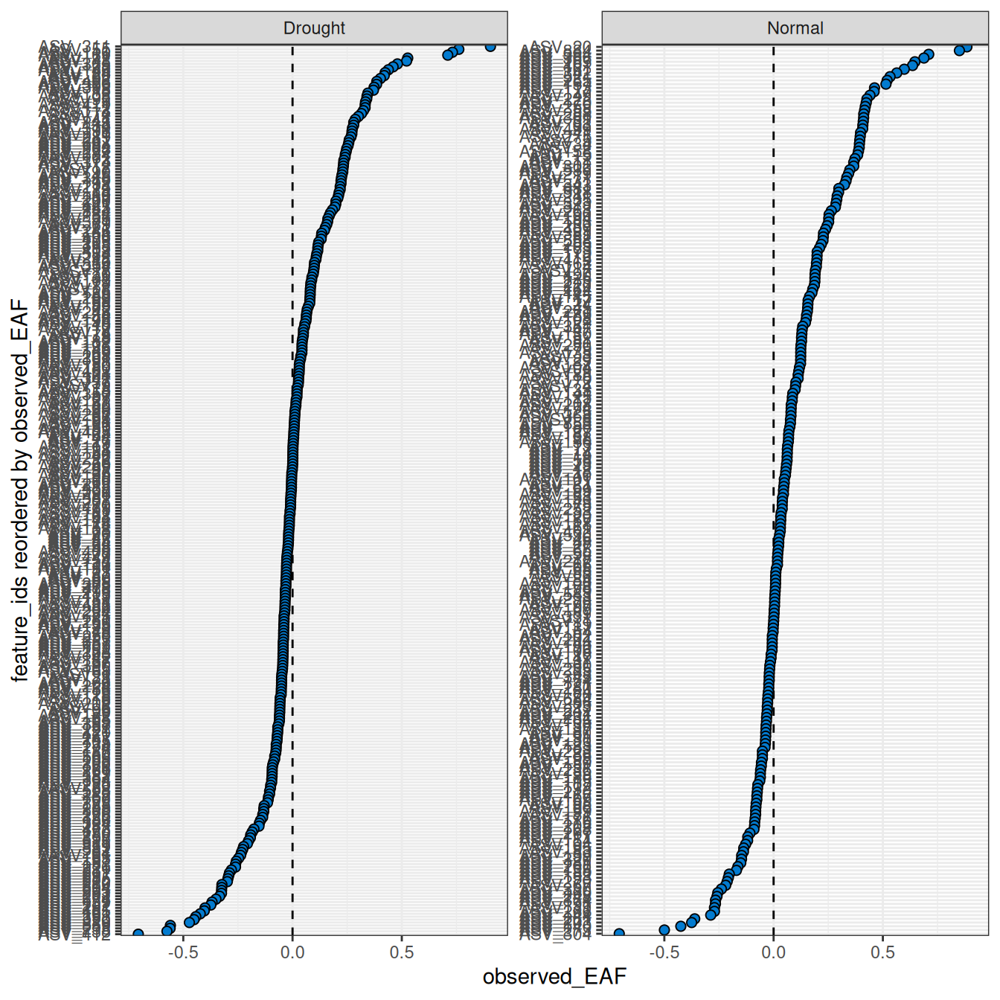
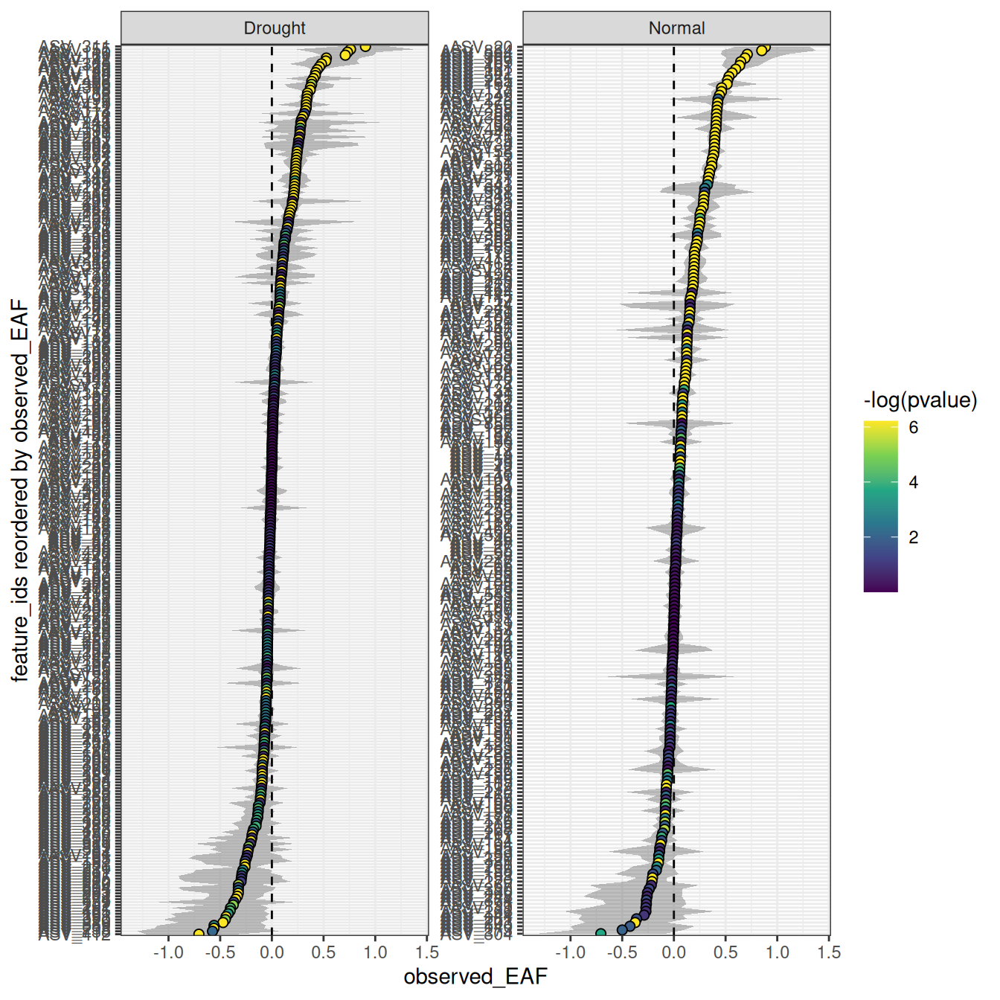
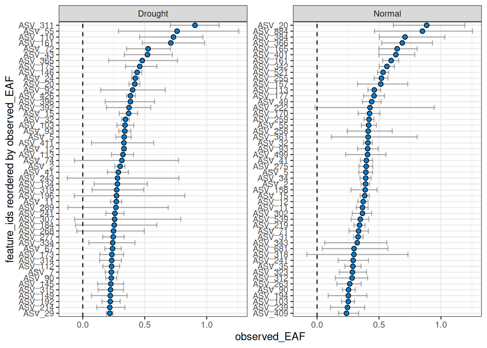
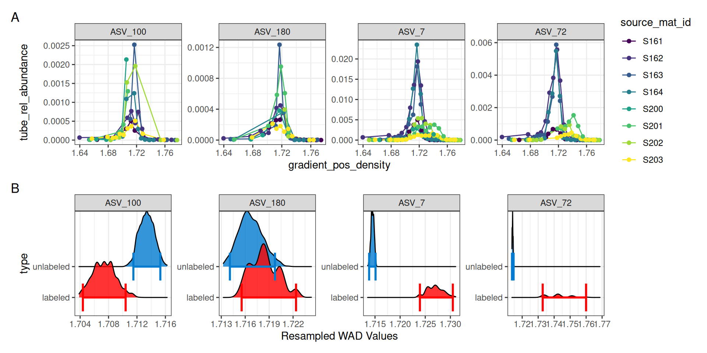
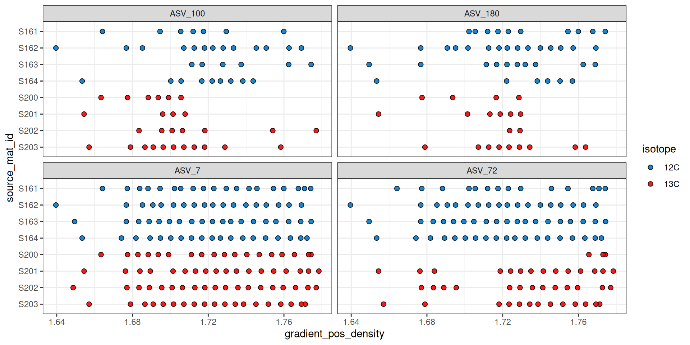
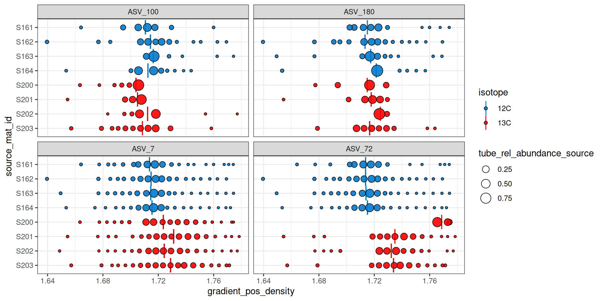

Background
What is EAF?
The excess atom fraction (EAF) quantifies isotope incorporation at the level of individual features (e.g. ASVs, MAGs). It represents the proportion of a feature’s biomass that was synthesized from the labeled substrate during the incubation period. EAF values are calculated from the shift in weighted average density (WAD) between unlabeled and labeled samples, following the equations in Hungate et al. 20151.
EAF values range from 0 to 1, where 0 indicates no incorporation of the label and 1 indicates that all biomass was derived from the labeled substrate. Negative EAF values are mathematically possible and typically indicate that a feature is slightly denser in the unlabeled treatment than the labeled — usually a result of natural variation rather than true incorporation.
How EAF is calculated
run_EAF_calculations() applies the Hungate et al. equations to each bootstrap resample independently, producing a distribution of EAF estimates per feature. summarize_EAF_values() then collapses that distribution into a mean and confidence interval. This resampling-based approach is what allows qSIP2 to propagate uncertainty from the WAD estimates through to the final EAF values.
Working with multiple comparisons
This vignette uses a list of qsip_data objects representing different experimental comparisons (e.g. “Normal” vs. “Drought” moisture treatments). The list-based workflow is covered in the multiple objects vignette — here we focus on the EAF calculations and how to interpret and visualize the results.
Getting EAF values
The following code builds two comparisons — “Normal” and “Drought” — using run_comparison_groups(), which internally calls run_EAF_calculations() on each.
qsip_list = get_comparison_groups(example_qsip_object, group = "Moisture") |>
select("group" = Moisture, "unlabeled" = "12C", "labeled" = "13C") |>
run_comparison_groups(example_qsip_object,
seed = 99,
allow_failures = TRUE)
#> Finished groups ■■■■■■■■■■■■■■■■ 50%
#> Finished groups ■■■■■■■■■■■■■■■■■■■■■■■■■■■■■■■ 100%
#> Plotting
Plotting the results shows a wide range of EAF values between the two comparisons (Figure 1).
plot_EAF_values(qsip_list)
#> ℹ Confidence level = 0.9
The color_by argument controls how features are colored. By default features are colored blue, but color_by = "pval" colors by significance and color_by = "success" colors by whether features meet the threshold set by the success_ratio parameter — which is only meaningful if allow_failures = TRUE was set during resampling. The confidence and error arguments control the interval style.
plot_EAF_values(qsip_list,
confidence = 0.95,
error = "ribbon",
color_by = "pval")
#> ℹ Confidence level = 0.95
The number of features can be filtered to include the n with the highest EAF.
plot_EAF_values(qsip_list,
top = 50,
error = "bar")
#> ℹ Confidence level = 0.9
By default, the facets do not share the same y-axis so each comparison is sorted from high to low independently. But, if you want to compare the EAF values between the two comparisons, you can set shared_y = TRUE. Keep in mind that the top n is calculated for each, so you may end up with more than n features in the plot if there isn’t much overlap between the two comparisons.
plot_EAF_values(qsip_list,
top = 50,
shared_y = TRUE,
error = "bar")
#> Warning: When `shared_y` is "TRUE" and `top` is set, data may be missing from plots if a
#> feature ranks in the top 50 of one comparison but not another.
#> ℹ Confidence level = 0.9Warning: As seen in the warning above, a current limitation when using
shared_y = TRUEtogether with thetopargument is that only the top n will be shown per facet, giving a blank value for any features that are not in the top n for that comparison. This does not mean they lack EAF values or were not found. This limitation may be addressed in the future.
Returning results as a data frame
You can also return the results as a dataframe using summarize_EAF_values() and a desired confidence (default is 90%).
summarize_EAF_values(qsip_list)#> ℹ Confidence level = 0.9| group | feature_id | observed_EAF | mean_resampled_EAF | lower | upper | pval | labeled_resamples | unlabeled_resamples | labeled_sources | unlabeled_sources |
|---|---|---|---|---|---|---|---|---|---|---|
| Drought | ASV_1 | -0.0491540 | -0.0483554 | -0.1082032 | 0.0087336 | 0.178 | 1000 | 1000 | 4 | 4 |
| Normal | ASV_1 | 0.0004555 | 0.0000135 | -0.0325729 | 0.0356580 | 0.986 | 1000 | 1000 | 3 | 4 |
| Drought | ASV_10 | 0.0547586 | 0.0550897 | 0.0344674 | 0.0747572 | 0.000 | 1000 | 1000 | 4 | 4 |
| Normal | ASV_10 | 0.1121811 | 0.1116458 | 0.0713690 | 0.1506676 | 0.000 | 1000 | 1000 | 3 | 4 |
| Drought | ASV_100 | -0.1116096 | -0.1110421 | -0.1681262 | -0.0503753 | 0.000 | 1000 | 1000 | 4 | 4 |
| Normal | ASV_100 | 0.0090370 | 0.0088377 | -0.0523892 | 0.0703022 | 0.798 | 1000 | 1000 | 3 | 4 |
Exploring individual features
EAF values alone don’t always tell the full story. A feature might have a surprisingly high or negative EAF, and understanding why requires looking at the underlying data — how the density curves are shaped, whether the resampling distributions overlap, and how consistently the feature appears across fractions. qSIP2 provides several functions for this kind of exploration, and it’s worth using them to QC results before drawing conclusions.
As an example, we will pick 4 features spanning the range of EAF values in the “Drought” comparison — one each with high, medium, low, and negative EAF values — and use summarize_EAF_values(), plot_feature_curves(), plot_feature_resamplings(), and plot_feature_occurrence() to understand what’s driving each result.
features = c("ASV_72", "ASV_7", "ASV_180", "ASV_100")
summarize_EAF_values(qsip_list$Drought) |>
filter(feature_id %in% features)#> ℹ Confidence level = 0.9| feature_id | observed_EAF | mean_resampled_EAF | lower | upper | pval | labeled_resamples | unlabeled_resamples | labeled_sources | unlabeled_sources |
|---|---|---|---|---|---|---|---|---|---|
| ASV_72 | 0.5271129 | 0.5246305 | 0.3529541 | 0.7072885 | 0.000 | 1000 | 1000 | 4 | 4 |
| ASV_7 | 0.2305506 | 0.2307068 | 0.1799998 | 0.2823904 | 0.000 | 1000 | 1000 | 4 | 4 |
| ASV_180 | 0.0308346 | 0.0318743 | -0.0425104 | 0.0994295 | 0.448 | 1000 | 1000 | 4 | 4 |
| ASV_100 | -0.1116096 | -0.1110421 | -0.1681262 | -0.0503753 | 0.000 | 1000 | 1000 | 4 | 4 |
Using a combination of plot_feature_curves() and plot_feature_resamplings() we can plot these 4 features (with some help from the patchwork library).
a = plot_feature_curves(qsip_list$Drought, features) + facet_wrap(~feature_id, nrow = 1, scales = "free")
b = plot_feature_resamplings(qsip_list$Drought, features, intervals = "bar", confidence = 0.95) + facet_wrap(~feature_id, nrow = 1, scales = "free")
(a / b) +
plot_layout(axes = "collect") +
plot_annotation(tag_levels = 'A')
For ASV_7 and ASV_72, it is clear in panel A of Figure 5 that the 13C labeled isotope has a nice shift compared to the unlabeled 12C sources. Indeed, the resampling results summarized in panel B also show a clear distinction with non-overlapping confidence intervals. ASV_180, which had an EAF value close to zero shows a much smaller density shift between the unlabeled and labeled samples, and the resampling results show overlapping confidence intervals.
ASV_100, on the other hand, shows a negative EAF value. In panel A we can see the peaks of the 13C do appear shifted left of the 12C, and although the confidence intervals do not overlap, we don’t expect to see lower 13C density values compared to 12C. In panel A, it appears two of the 13C lines abruptly end, which may be a sign that ASV_100 doesn’t occur in as many fractions as necessary.
The plot_feature_occurrence() function can be used to see how often a feature occurs in the samples and give some idea about whether they span the range of densities, are found in fractions close or far from one another, and how the calculated WAD value is affected by these occurrences.
plot_feature_occurrence(qsip_list$Drought, features)
Figure 6 shows that ASV_100 stops appearing in some labeled sources after a density of ~1.7. With show_wad = TRUE and scale = "feature" we can overlay the WAD values and relative abundance (Figure 7). Here, the size of the circle represents the relative abundance of the feature in the sample, and for ASV_100 we see the most abundant fraction does heavily influence the calculated WAD value (vertical bar). So, although missing data on the “right side” of the curve may lead to issues, it doesn’t seem to affect the WAD value for ASV_100, assuming the peak of the values are in that most abundant fraction.
plot_feature_occurrence(qsip_list$Drought,
features,
show_wad = TRUE,
scale = "feature")
Figure 7 can also help identify additional potential issues. For example, ASV_72 was one of the features with the highest EAF values, but it looks like source S200 only has it in the extremely heavy fractions, and it has a calculated WAD that is much higher than the other 13C sources. When we ran run_comparison_groups() at the very beginning we didn’t define a minimum number of fractions, so the default of 2 was used. We might, however, consider increasing the minimum number of labeled fractions required to remove sources with feature occurrences like ASV_72 in source S200.
Conclusion
EAF values quantify isotope incorporation at the feature level, and the exploration tools shown here — density curves, resampling distributions, and occurrence plots — are valuable for understanding what drives any given result before drawing biological conclusions. The next step in the workflow is delta EAF, which extends this framework to compare EAF values between experimental groups.